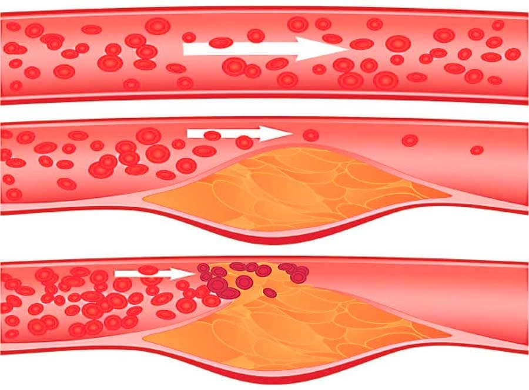

অনলাইন স্বাস্থ্য সেবা
বয়স বাধা কোনও বাধা নয় সুস্থ জীবনযাপনে ! একজন গবেষণাবিদ কীভাবে ভাল স্বাস্থ্য এবং
দীর্ঘায়ু বজায় রাখবেন তার
রহস্য উদঘাটন করেছেন
21:48 ,
চিকিত্সকের মতে, দীর্ঘায়ু বাড়ানোর গোপনীয়তা আমাদের রক্তনালী গুলির মধ্যেই রয়েছে।
যদি এইগুলি পরিষ্কার এবং
স্বাস্থ্যকর হয়, আপনি সহজেই আপনার জীবন 15-20 বছর বাড়িয়ে দিতে পারেন!

খ্যাতিমান ইংরেজি কার্ডিওলজিস্ট, উদ্ভাবক, অধ্যাপক এবং বহু-জাতীয় পুরষ্কার বিজয়ী রূপ্ট ডেভিডসন উচ্চ
রক্তচাপের চিকিত্সার একটি অভিনব পদ্ধতি তৈরি করেছেন! ডাক্তার বলেছিলেন যে একবার আপনি রক্তনালীগুলি পরিষ্কার
করেন, উচ্চ রক্তচাপ এবং আরও অনেকগুলি অনুমানযোগ্য "অযোগ্য" রোগগুলি অদৃশ্য হয়ে যাবে। ইতিমধ্যে, হৃদরোগ
বিশেষজ্ঞ রোগীদের উপর অনুশীলন করে তার তত্ত্ব নিশ্চিত করেছেন ।
আমাদের সংবাদদাতা ড: ডেভিডসনের সাক্ষাত্কার নিতে সক্ষম হয়েছেন। তিনি রক্তনালী পরিষ্কার এবং জীবন দীর্ঘায়িত করার
তার পদ্ধতিটি ব্যাখ্যা করেছিলেন।
ডাঃ ডেভিডসন, আপনি বারবার বলেছেন যে পরিষ্কার রক্তনালীগুলি স্বাস্থ্যের চাবিকাঠি। কেন
আপনি এমনটা মনে করছেন
?
এটি বিশ্বব্যাপী জানা যায় যে উচ্চ রক্তচাপ, হার্ট অ্যাটাক এবং স্ট্রোকগুলি রক্তনালীগুলির
কোলেস্টেরল "ক্লোজিং"
এর ফলাফল। কার্ডিওভাসকুলার ডিজিজ হ'ল আইসবার্গের ডগা। নোংরা রক্তনালীগুলির কারণে 10 টির মধ্যে 9 টি দীর্ঘস্থায়ী
হৃদরোগের নিরাময় অযোগ্য
কিন্তু "নোংরা" রক্ত নালী হলে কী হয় ? মনে করুন একটি মরিচা পূর্ণ পাইপ। সেখানে শেষ
পর্যন্ত কী হয়? মুলত, জলের
চাপ বৃদ্ধি পায় এবং জল নিজেই নোংরা হয়ে যায়। পাইপ এর মতো এটি একই রকম। কোলেস্টেরল বা অন্যান্য পদার্থগুলি যখন
তাদের দেয়ালে জমা হয়, তখন রক্তচাপ বেড়ে যায় (জমে থাকা রক্তনালীগুলি উচ্চ রক্তচাপের মূল কারণ)! রক্ত নিজেই
নিম্ন মানের হয়ে যায়, রক্ত সরবরাহ খারাপ হয়। ফলস্বরূপ, সমস্ত অঙ্গ এবং সিস্টেমগুলি প্রভাবিত হয়। এমনকি ত্বক
মূলত এই সিস্টেমর ভিতর পরে ।

এভাবেই রক্তনালীগুলির ধীরে ধীরে দূষণ ঘটে। যদি আপনি সেগুলি কখনও পরিষ্কার না করেন এবং আপনার বয়স 40 বছরেরও বেশি
হয় তবে বিবেচনা করুন যে আপনার রক্তনালীগুলি খুব "নোংরা" হবে । যদি ইতিমধ্যে এটি ঘটে তবে এটি শীঘ্রই আপনার
স্বাস্থ্যের উপর প্রভাব ফেলবে।
এমন কোনও লক্ষণ রয়েছে কি যা ভাস্কুলার সমস্যাগুলি ইঙ্গিত করে ?
হ্যা অবশ্যই, প্রধান লক্ষণগুলি হল:
1. মাইগ্রেন।.
2. স্মৃতিশক্তি হ্রাস।
3. দীর্ঘস্থায়ী ক্লান্তি.
4. অনিদ্রা.
5. বিছানায় সমস্যা।
6. ৬. ভিশন ও শ্রবণ প্রতিবন্ধকতা।.
7. উচ্চ্ রক্তচাপ.
8. শ্বাসকষ্ট এবং বুক যন্ত্রণা.
9. ফ্যাকাশে চামড়া.
10. পেশী এবং জয়েন্টগুলিতে ব্যথা.
2. স্মৃতিশক্তি হ্রাস।
3. দীর্ঘস্থায়ী ক্লান্তি.
4. অনিদ্রা.
5. বিছানায় সমস্যা।
6. ৬. ভিশন ও শ্রবণ প্রতিবন্ধকতা।.
7. উচ্চ্ রক্তচাপ.
8. শ্বাসকষ্ট এবং বুক যন্ত্রণা.
9. ফ্যাকাশে চামড়া.
10. পেশী এবং জয়েন্টগুলিতে ব্যথা.
প্রকৃতপক্ষে, রক্তনালীগুলি খুব দ্রুত নোংরা হয়ে যায়, বিশেষত প্রবীণদের ক্ষেত্রে। আপনাকে দিনভর বার্গার বা ফ্রাই
খাওয়ার দরকার নেই। কিছু সসেজ বা সবজি , ডিম খান এবং নির্দিষ্ট পরিমাণ কোলেস্টেরল আপনার পাত্রগুলিতে জমা হবে।
সময়ের সাথে সাথে দূষণ বাড়ে ।
ডাঃ ডেভিডসন, আপনি সবসময়ই বলে থাকেন যে শরীরের রক্তনালীগুলি দায়ী 90% স্বাস্থ্যের
জন্য? এটা সত্যি?
রক্তনালী গুলি কেবল রক্তের নল নয়। এটি একটি গুরুত্বপূর্ণ এবং জটিল অঙ্গ যার ক্ষতি হলে তাত্ক্ষণিকভাবে শরীর
দুর্ভোগের দিকে পরিচালিত করে।
১) অস্বাস্থ্যকর রক্তনালী গুলি ভেরিকোজ শিরাগুলির বিকাশ করে, ধীরে ধীরে ফোলাভাব এবং পা ভারী অনুভূতি হয় , ঠান্ডা
বা অসহনীয় জ্বলনের অনুভূতি হয়। হিল স্পারস এবং অন্যান্য পাদদেশের সমস্যাগুলিও উপস্থিত হয়। দুর্বল সঞ্চালন
ব্যাকটিরিয়া থেকে সুরক্ষার অভাব বাড়ে এবং এমনকি সেরপিগোও উপস্থিত হতে পারে!
২) রক্তনালীগুলির ব্লক হলে যকৃতে হপাটাইটিস বাড়ে। তিক্ততা মুখের মধ্যে উপস্থিত হয়।
৩) জয়েন্টগুলিতে দুর্বল এবং দূষিত পাত্রগুলি কার্টিলেজ "শুকনো" করে। জয়েন্টে ব্যথা, অস্টিওকোঁড্রোসিস,
হার্নিয়াস মতন রোগ প্রদর্শিত হয়।
৪) রক্তনালীগুলির সমস্যাগুলি চোখের দৃষ্টিশক্তির উপর পড়ে , চোখের সামনে "তরঙ্গ" এবং "ঝাপসা" উপস্থিতি দেখা দেয়।
ছানি হয়। চোখের লালভাব, যা আমরা সাধারণত ক্লান্তি হিসাবে মনে করি, এটি আসলে একটি অণু রক্তক্ষরণ, যা চোখের
ক্ষুদ্র কৈশিকগুলির ফাটল।
৫) সেরিব্রাল সংবহন ব্রেইনের রক্ত সঞ্চালন যা বিঘ্নিত হলে মাথা ঘোরা, কানে বাজানো এবং স্মৃতিশক্তি হ্রাস হতে
পারে। আপনি নিশ্চয় রান্নাঘরে প্রবেশের আগে এবং কেন সেখানে গেছেন তা ভুলে গিয়েছেন অথবা আপনি "জিহ্বার ডগায়
থাকা" শব্দটি মনে করতে পারেন না। এই সমস্ত লক্ষণগুলি সেরিব্রাল রক্তনালী গুলির অবস্থার অবনতি নির্দেশ করে।
এবং, অবশ্যই, ভাস্কুলার রোগের রানী হল উচ্চ রক্তচাপ। উচ্চ রক্তচাপ হ'ল স্ট্রোকের মা এবং হার্ট অ্যাটাকের
বোন।
অতিরিক্ত ওজন, উদাহরণস্বরূপ, রক্তনালীগুলির সাথেও জড়িত। কোলেস্টেরলযুক্ত খাবার আপনার অঙ্গগুলি অনাহারে পরিণত করে
এবং আপনার রক্তনালীগুলি প্রয়োজনীয় পরিমাণে পুষ্টি সরবরাহ করতে পারে না। অতএব, মস্তিষ্ক আপনাকে খাওয়ার
প্রয়োজনীয় সংকেতগুলি প্রেরণ করে। এবং আপনি খাবেন। কিন্তু নোংরা খাদ্য গুলির কারণে, অঙ্গগুলির এখনও খাদ্যের অভাব
হয়। মস্তিষ্ক আবার আদেশ দেয় - আপনার খাওয়া দরকার। এবং আরও ...
তাই শরীরের ক্যালোরি প্রয়োজন বলে মিষ্টি এবং চর্বিযুক্ত কিছু খাওয়ার অবিচ্ছিন্ন ইচ্ছা হয়
যখন আমার সহকর্মীরা তাদের রোগীদের বলছেন "অতিরিক্ত ওজনের কারণে আপনার উচ্চ রক্তচাপ রয়েছে" তারা ভুল। উচ্চ রক্তচাপ
ওজন বেশি হওয়ার কারণে হয় না। অতিরিক্ত ওজন হওয়ায় উচ্চ রক্তচাপের কারণে ঘটে।
তবে, আপনার যদি এই লক্ষণগুলি নাও পাওয়া যায়, তবুও আপনি 30 বছর বয়সে প্রতি 5 বছর অন্তত একবার আপনার রক্তনালীগুলি
পরিষ্কার করতে হবে। এবং আপনার দুর্দান্ত স্বাস্থ্য থাকবে।
আপনি রক্তনালী পরিষ্কার করার জন্য আপনার গোপন কথা বলতে পারেন?
রক্তনালীগুলির নিরাপদ পরিষ্কারের জন্য, আমি এক অনর্থক খ্যাতিযুক্ত একটি ড্রাগ -
সুপারিশ করতে পারি। এটি 15-20 মত বছর জীবনকে দীর্ঘায়িত করতে
পারে,
শক্তি এবং স্বাস্থ্য দেয়, শারীরিক ভোগান্তি এবং প্রাণশক্তি হ্রাস থেকে মুক্তি দেয়।
আমি হারবাল চায়ের সুপারিশ করি। এবং দ্বিতীয়ত রক্তনালীগুলির অস্ত্রোপচার দ্বারা পরিষ্কার করে নেওয়া হয়। তবে
অস্ত্রোপচারের বিপরীতে, আমি যে ওষুধটির নাম দিয়েছি তাতে জটিলতা বা পার্শ্ব প্রতিক্রিয়া হয় না। এই ওষুধটি দেহের
সমস্ত রক্তনালীগুলি পরিষ্কার করে - বড় এবং ঘন ধমনী থেকে শুরু করে সবচেয়ে ক্ষুদ্র এবং পাতলা কৈশিকটিতেও
বছরের পর বছর ধরে যে দূষণ জমেছে, আপনার জীবনকে বিষাক্ত করছে, নিয়মিত ব্যবহারের সাথে 1.5 থেকে 2 মাসের মধ্যে
-এর মাধ্যমে অপসারণ করা যেতে পারে।

1.5 মাসের মধ্যে, শরীর থেকে 4 কেজি
পর্যন্ত কোলেস্টেরল দ্রবীভূত হয়
এবং সরিয়ে দেয়। ড্রাগটি 900 গ্রাম থেকে 1 কেজি থ্রোবোটিক ভরকে লিকুইফাই করে এবং 350-400 গ্রাম ক্যালিকেশন দূর
করে।
তার সাহায্যে, মাথাব্যাথা এবং সেইসাথে কানে ভোঁ ভোঁ শব্দ সমস্যা সমাধান হয়ে যায়। পরিষ্কার জল দ্বারা সঠিকভাবে
খেতে হবে , মস্তিষ্ক একটি সুপার কম্পিউটারের মতো কাজ করে। চিন্তাভাবনাগুলি স্পষ্ট এবং সুনির্দিষ্ট হয় ।
সংবেদনশীলতা বৃদ্ধি পায়, আপনি এমন পরিষ্কার শব্দ শুনতে পান যা আপনি আগে মনোযোগ দেন নি। আপনার শ্রবণশক্তি উন্নত
হয় এবং আপনি এমনকি দূরের থেকেও কথোপকথন বুঝতে পারবেন ।
শ্বাসনালিদ্বয় পুনরুদ্ধার হয়। স্বাভাবিক শ্বাস প্রশাস ফিরে আসে । ফ্রেস বায়ূ ফুসফুসকে পূর্ণ করে তোলে, দেহের
মধ্যে দিয়ে আনন্দদায়ক অনুভত হয় , যা কিছুটা স্বাচ্ছন্দ্যবোধ করে।
গন্ধশক্তি প্রখর হয়। সাধারণ খাবার অসাধারণ আনন্দ নিয়ে আসে। তুমি কম খাও। মিষ্টি এবং চর্বি জাতীয় খাবারের জন্য
অবিচ্ছিন্ন লালসা অদৃশ্য হয়ে যায়।
শুনে ভালো লাগছে! বাস্তবে, আমি প্রথমবারেই সম্পর্কে শুনেছি যদিও আমি
নিউট্রেসটিক্যালস সম্পর্কে অনেক কিছু শুনেছি। জাপান এবং ইস্রায়েলে, নিউট্রেসটিকালগুলি পছন্দসই চিকিত্সা হিসাবে
আইন করা হয়েছে। ইংল্যান্ডে, এই পদ্ধতিটি এখনও বিশ্বাসযোগ্য নয়।
অবিশ্বাসের একটি গল্প বলি।
1928 সালে, প্রথম অ্যান্টিবায়োটিক, পেনিসিলিন উদ্ভাবিত হয়েছিল। এটি আমাশয় এবং টাইফাস নিরাময় করতে পারে, অনেক
লোককে মৃত্যুর হাত থেকে বাঁচায়।
তবে বেশিরভাগ লোক বিশ্বাস করে না যে এটি সাহায্য করতে পারে, কারণ তারা ইতিমধ্যে নিরাময় সন্ধানের জন্য 1000 বার
হতাশ হয়েছিলেন। যারা 1000 বার হতাশ হয়েছিলেন এবং 1001 চেষ্টার ভয়ে ছিলেন না তাদের নিরাময় হয়েছে। অন্যরা
বলছিলেন "ওহ, না, এটি আর একটি" অলৌকিক "ওষুধ যা সাহায্য করবে না"। ফলস্বরূপ, তারা পুনরুদ্ধার করার প্রতিটি সুযোগ
থাকলেও তারা মারা গেল।
তারপরে যথাযথ সময়ে পেনিসিলিন পেট্রিল, টাইফয়েড জ্বর এবং নিউমোনিক প্লেগের মতো রোগগুলিকে পরাস্ত করে। একইভাবে,
আমাদের সময়ে ভাস্কুলার রোগগুলি দূর করবে। ইতিমধ্যে প্রথম
পদক্ষেপ
নেওয়া হয়েছে। জাপান, কানাডা, দক্ষিণ কোরিয়া, সুইজারল্যান্ড এবং ইস্রায়েলে ওষুধের থেরাপির পরিবর্তে
নিউট্রাসিউটিক্যালস ব্যবহার করে রক্তনালী পরিষ্কার করার আইন পাস করা হয়েছে।
ইংল্যান্ডে আনুষ্ঠানিকভাবে কেবলমাত্র এক জায়গায় নিবন্ধিত -
লন্ডনের
একটি হাসপাতালে। এখানেই আমাদের অভিজাতদের চিকিত্সা করা হয়: মন্ত্রী, ডেপুটি, সেলিব্রিটি এবং অন্যরা। তাদের
ইস্রায়েলি প্রোটোকল অনুসারে চিকিত্সা করা হয় এবং আমাদের স্বাস্থ্য মন্ত্রীর নির্দেশাবলী তাদের কাছে কিছুই বোঝায়
না। অতএব, এই রোগীদের চিকিত্সার একটি অন্তহীন প্রক্রিয়া পরিবর্তে ফলাফল রয়েছে।
বাকী লোকের মতো স্বাস্থ্য মন্ত্রনালয় উল্লিখিত অভিজাত শ্রেণীর কারখানাগুলি দ্বারা উত্পাদিত রাসায়নিকগুলির সাথে
চিকিত্সা সরবরাহ করে।
আমাদের সন্দেহগুলি আমাদের বিশ্বাসঘাতক, তাদের কারণে আমরা যা অর্জন করতে পেরেছিলাম তার অনেকটাই হারাতে থাকি, তাদের
কারণে আমরা নতুন কিছু চেষ্টা করতে ভীত হওয়ায় আমরা ব্যর্থ হই। এটি ওষুধের ক্ষেত্রেও প্রযোজ্য।
ক্যাপসুল শরীরে প্রবেশের পরে, প্রাকৃতিক প্রক্রিয়াগুলি শুরু হয়। ক্যাপসুলটি জলের সাথে প্রতিক্রিয়া প্রকাশ করে
এবং
-এর প্রাকৃতিক আহরণের সাথে অক্সিজেনেশন এবং স্যাচুরেশন প্রক্রিয়া
শুরু
করে ..
জল এবং অক্সিজেনের সাথে যখন স্যাচুরেটেড হয়, তখন ওষুধের নির্যাস হাইড্রোজেন পারক্সাইড - অক্সিজেনেশনের প্রভাব
অর্জন করে।
অণু হ'ল অক্সিজেন পাম্প। এগুলি রক্তনালী গুলিতে কোলেস্টেরল জমে
যাওয়ার
ভিড় ধ্বংস করে এবং নিখরচায় রক্ত প্রবাহ সরবরাহ করে।
এছাড়াও, ক্যাপসুলগুলির সংমিশ্রণ জীবন দানকারী কণাগুলির তাত্ক্ষণিক শোষণের জন্য দায়ী। অক্সিজেন সমৃদ্ধ
নিষ্কাশনগুলি খাদ্যনালীর দেয়ালগুলি সহজেই শোষিত হয়। অতএব,
জ্বালাপোড়া করে না, মুখে তিক্ততা, শ্বাসকষ্ট হয় না,
অন্ত্রগুলিকে
জ্বালা করে না এবং পেটকে সুরক্ষা দেয়।
আমি আরও নোট করেছি যেটা লক্ষণীয় যে এই পণ্যটিতে রাসায়নিক নেই, তবে কেবল উচ্চ ঘন উদ্ভিদ আহরণগুলি রক্তনালী
পরিষ্কারের জন্য দরকারী। এটি শরীরের ক্ষতি করে না এমনটি ছাড়াও প্রতিকারটিও খুব কার্যকর।
আমার প্রাক্তন অনেক রোগী এখনও তাদের কাছে রক্তনালী পরিষ্কার করার ক্ষেত্রে সাহায্যের জন্য আমার কাছে আসেন।
সম্প্রতি আমি কেবল এই ওষুধটিই সুপারিশ করেছি। এটি প্রত্যেককে খুব ভালভাবে সহায়তা করে।
লন্ডন বিশ্ববিদ্যালয়ের ওয়েবসাইটটি ক্লিনিকাল অধ্যয়ন থেকে রক্তনালী পরিষ্কার করার বিষয়ে সরকারী পরিসংখ্যান
রয়েছে। মোট, প্রায় 2000 রোগী এই গবেষণায় অংশ নিয়েছিল। এই ওষুধ দিয়ে সবাই চিকিত্সা করা হয়েছিল।
-র প্রতিটি প্রস্তুতকারকের কাছ থেকে 100 ইউরোর দাবি করা ফার্মাসি
চেইনের
লোভের কারণে এই বিরোধ দেখা দেয়! তারা প্রস্তুতকারকের দামের উপর একটি বড় মার্ক আপ স্থাপন করেছে (ইংল্যান্ডের কিছু
ফার্মাসিতে -এর ব্যয় 300 ইউরো হতে পারে)।
ফলস্বরূপ, প্রস্তুতকারকের সমস্ত ফার্মাসির সাথে সম্পর্ক ছিন্ন
করে এবং
কেবলমাত্র ইন্টারনেটের মাধ্যমে ড্রাগটি বিতরণ শুরু করে। আমি মনে করি এটি ন্যায্য। এখানে কেন: কোনও আউটলেট ভাড়া
নেওয়া এবং এটির জন্য অর্থ প্রদানের প্রয়োজন নেই, ফার্মাসিকে ঘুষ দেওয়ার দরকার নেই। এই কারণেই
এখন একটি বিশেষ অফার হিসাবে উপলব্ধ।
বিশেষ প্রোগ্রাম "ক্লিন ভ্যাসেলস"
আমাদের ইনস্টিটিউট, কার্ডিওভাসকুলার সার্জারির ন্যাশনাল সেন্টার ফর মেডিকেল রিসার্চ এবং
প্রস্তুতকারকের সাথে একত্রে একটি মেডিসিন প্রকল্পের অংশ হিসাবে
একটি
অগ্রাধিকারমূলক কর্মসূচি চালু করে।
প্রোগ্রামে অংশ নিতে আপনার কী দরকার?
- এটি প্রচুর পরিমাণে কেনার চেষ্টা করে এবং তাদের নিজস্ব মূল্যে পুনরায় বিক্রয় করতে চেষ্টা করার জন্য এই অনুশীলনকারীদের বিরুদ্ধে লড়াই করা প্রয়োজন।
- অফিশিয়াল নিবন্ধকরণ ফর্মটি অনুশীলনকারীদের কাছ থেকে গুণমান এবং সুরক্ষার গ্যারান্টি পাবে ।
ডিসকাউন্ট প্রোগ্রাম কত দিন স্থায়ী হবে?
মন্তব্যসমূহ
যতদূর আমি জানি, মেরি, আপনার অঞ্চলে, প্রোগ্রামটি মে মাসে শেষ হয়েছিল। সম্ভবত তারা পরের বছর এটি আবার চালু করবে,
তবে আমি নিশ্চিত নই
আমি 500 ইউরোর জন্য ওষুধের একটি কোর্স কিনেছি। গত বছর, যখন
তখনও ফার্মেসীগুলিতে পাওয়া যায়। আমি বলব আমি আফসোস করব না! যদিও
এটি
ব্যয়বহুল ছিল, আমি ইতিমধ্যে গত বছর অন্যান্য ওষুধ ব্যবহার না করে প্রায় একই পরিমাণ সঞ্চয় করেছি। এবং আমার জীবন
অনেক সহজ হয়ে গেছে, আপনি এই অর্থ সঞ্চয় করতে পারবেন না! 52 বছর বয়সে, আমি ইতিমধ্যে দুর্বল বৃদ্ধের মতো অনুভব
করেছি। রক্তচাপকে স্বাভাবিক করার জন্য আমি রক্তচাপের মনিটর এবং বড়িগুলি থেকে খুব বেশি দূরে না যাওয়ার চেষ্টা
করেছি এবং অবসর নেওয়ার পরেও বেঁচে থাকার স্বপ্ন দেখিনি। আমার সব সময় মাথা ব্যথা ছিল, আমি এমনকি ভেবেছিলাম আমি
বরং মরে যাব ... এই ড্রাগ দিয়ে আমি 2 মাসের মধ্যে রক্তচাপ সম্পর্কে ভুলে গেছি! এখন আমি প্রায় একজন যুবকের মতো
অনুভব করছি! সুতরাং, এমনকি যদি আপনার অঞ্চলটি অগ্রাধিকার প্রোগ্রামে অন্তর্ভুক্ত না করা হয়, তবুও আবেদন করুন -
আপনি এতে আফসোস করবেন না! আমি মনে করি খুব শীঘ্রই ইংল্যান্ডে
ব্লক হয়ে
যাবে।
হ'ল প্রতিটি কিছুর জন্য সেরা পরিমাপ। এর আগে আমি এরিফনের পরে
অ্যাডলফান
ব্যবহার করেছি। আমি জানি তারা ইতিমধ্যে পুরানো। তবে আমি চিকিত্সকদের কাছে যেতে পছন্দ করি না, তাই এটি আমাকে খুব
বেশি বিরক্ত করে না। আমার রক্তচাপ বা হার্টের হার বাড়ার সময় আমি কেবল সময়ে সময়ে ওষুধ খাই। এবং তারপরে হঠাৎ
তাদের প্রভাব চলে গেল। আমি ডাক্তারের কাছে গিয়েছিলাম এবং তিনি আমাকে একটি নতুন ড্রাগ
চেষ্টা করার জন্য বলেছিলেন (তরুণ চিকিৎসক সম্ভবত এখনও ভেবেছিলেন
ড্রাগগুলি মানুষের সেবা করা উচিত, লাভ নয়!)। আমাকে একবারে
সহায়তা
করেছিল - আমার রক্তচাপ তাত্ক্ষণিকভাবে স্বাভাবিক হয়ে যায়, তবে আমি ডাক্তারের পরামর্শ অনুসারে চিকিত্সা চালিয়ে
যাই। 3 সপ্তাহ পরে, আমি হাইপারটেনশন কী তা ভুলে গিয়েছিলাম। 10 বছর ধরে আমাকে বিরক্তিকর শিরাগুলি অদৃশ্য হয়ে গেল!
আমারও একটি অন্তরঙ্গ সমস্যা ছিল যা এখন চলে গেছে। আমি দুর্দান্ত মনে হচ্ছে, আমি আবার যুবক!
মায়ের আঙ্গুলগুলি অসাড় হতে শুরু করে, ডাক্তার "রক্তনালীগুলি পরিষ্কার করার" পরামর্শ দিয়েছেন। আমরা নির্ধারিত
স্ট্যাটিন কিনেছি তবে আমরা পড়েছি যে তারা ক্যান্সার সৃষ্টি করতে পারে এবং এটি ঝুঁকি না নেওয়ার সিদ্ধান্ত
নিয়েছে। তখন আমি
সম্পর্কে শুনেছি। আমরা ক্যাপসুল কিনেছিলাম এবং ক্লিনিকে
চিকিত্সার জন্য
প্রায় ভাগ্য দিয়েছি। তবে ড্রাগ থেকে ফলাফল আসতে খুব বেশি দিন হয়নি were কয়েক দিন পরে, আমার মা তার চেহারা,
চুল, নখ, শরীরের সাধারণ অবস্থার একটি উল্লেখযোগ্য উন্নতি লক্ষ্য করেছিলেন এবং দ্বিতীয় সপ্তাহে, অসাড়তা প্রায়
অদৃশ্য হয়ে যায়। 1.5 মাস পরে, অসাড়তা সম্পূর্ণরূপে অদৃশ্য হয়ে যায় + রক্তচাপ স্বাভাবিক অবস্থায় ফিরে আসে।
এখন তিনি ভাল অনুভব করছেন, পার্থক্যটি স্বর্গ ও পৃথিবীর মধ্যে মত, আমার মা এখন প্রচুর শক্তি নিয়েছেন, তার
স্মৃতিশক্তি উন্নতি করেছে এবং খারাপ আবহাওয়াতেও তার জয়েন্টগুলি আঘাত দেওয়া বন্ধ করে দিয়েছে। সুতরাং, ওষুধটি
দুর্দান্ত, আমি এটি সবার কাছে সুপারিশ করছি!
আপনি কি ভাবছেন না যে আপনি সবার বিচার করতে পারবেন! তুমি জানো না পরিস্থিতি কী! হতে পারে এই ব্যক্তিরা অক্ষম, তখন
থেকে তাদের কোথায় অর্থ নেওয়া হবে?

নিবন্ধের জন্য ধন্যবাদ! আমি কোনও উত্সাহী ক্লিনিক দর্শনার্থী নই, বিশেষত যেহেতু চিকিত্সকরা সাধারণত ব্যয়বহুল,
প্রশ্নবিদ্ধ এবং হার্ড-টু-সন্ধানের ওষুধগুলি লিখে দেন (আমি মনে করি ব্র্যাডফোর্ডের কোনও ফার্মাসিতে আমি চোখের কোনও
নির্দিষ্ট ড্রপ খুঁজে পাইনি)। এবং চিকিত্সকরা সবসময় আমাদের দেহের ভিতরে সমস্যাগুলি "দেখতে" পান না। আমার হাত
পর্যায়ক্রমে সারা বছর ধরে সকালে অসাড় হয়ে যায়। এই নিবন্ধটি পড়ার পরে, আমি সিদ্ধান্ত নিয়েছি আমি
কে একবার চেষ্টা করব। অসাড়তা অব্যাহত থাকলেও পাত্রগুলি পরিষ্কার
করার
জন্য এটি কার্যকর হবে! তদুপরি, এটি একটি প্রাকৃতিক পণ্য। ধন্যবাদ
লিখিত হিসাবে পেয়েছি! আমার উচ্চ রক্তচাপ, প্রায় প্রতি রাতে
মাথা
ব্যাথা ছিল, এমনকি ব্যথানাশকরাও আমাকে সহায়তা করতে পারেন নি। এটি কেবল পরে আবিষ্কার হয়েছিল যে চাপের কারণে আমার
মাথাব্যথা ছিল। তবে আমি এটি সমাধান করতে পেরেছি। আমার এক সহকর্মী আমাকে
চেষ্টা করার পরামর্শ দিয়েছেন try আমি পছন্দসই প্রোগ্রামের
আওতায় এটির
জন্য আবেদন করতে পেরেছি এবং খুব খুশি হয়েছিল। 2 মাস পর আমি আলাদা হয়ে গেলাম! আমি বুঝতে পেরেছিলাম যে "রক্তনালী
পরিষ্কারের" আগে আমি মৃতের মতোই ভাল ছিলাম! মাথাটি আর আমাকে বিরক্ত করে না, বৈকল্পিক শিরাগুলি অদৃশ্য হয়ে যায়
এবং সবচেয়ে গুরুত্বপূর্ণ: আমি 20 কিলোগ্রাম হারিয়েছি! আমার ওজন ছিল 94 কেজি, এখন 74! রক্ত চলাচল স্বাভাবিক
হওয়ার কারণে এটি ঘটে! আমি অবশ্যই প্রত্যেককে সুপারিশ করব!
আমি রক্তনালী পরিষ্কারের এই পদ্ধতি সম্পর্কে শুনেছি, তবে এখনও এটি চেষ্টা করে দেখিনি ... আমার মনে হয় এটি চেষ্টা
করার সময় হয়েছে =)
আমার একটি উচ্চ কোলেস্টেরল স্তর রয়েছে এবং পিটাভাসট্যাটিন (লিভাজো) সুপারিশ করা হয়েছিল। ব্যবহারের প্রথম
সপ্তাহের সময়, আমি প্রয়োজনীয় ওষুধও নিতে পারিনি, কারণ সমস্ত লিম্ফ নোড ফুলে গেছে, বিশেষত ঘাড়ের চারদিকে, আমি
মাথা ঘোরালাম না। এছাড়াও, দৃষ্টি ক্ষয় হয়। 4 দিন ব্যবহারের পরে এটি চোখের সামনে "কুয়াশা" এর মতো ছিল। ডাক্তার
বলেছিলেন এগুলি স্ট্যাটিনের পার্শ্ব প্রতিক্রিয়া। আমাকে ক্রেস্টর (ROSUVASTATIN) নির্ধারণ করা হয়েছিল, তবে আমি
এটি নিতে ভয় পেয়েছিলাম। এখন আমি
চেষ্টা করার কথা ভাবছি, প্রাকৃতিক গঠনের কারণে কোনও পার্শ্ব
প্রতিক্রিয়া সৃষ্টি করা উচিত নয়, তাই না? অথবা অন্য কিছু নেওয়া ভাল?
আমি একটি সুযোগ নিয়েছি এবং কখনও আফসোস করি না। আপনার যদি ভাস্কুলার সমস্যা থাকে তবে আমি এটির প্রস্তাব দিই। কোনও
পার্শ্ব প্রতিক্রিয়া ছিল না, ফলাফলগুলি আনন্দদায়ক ছিল
ডায়েটগুলি রক্তনালী গুলিতে নতুন অমেধ্য গঠন রোধ করতে সহায়তা করবে, তবে পুরানোগুলি প্রভাবিত করবে না। বিশ্বাস
করুন, আমি বেশ কয়েকবার এর মধ্যে অর্ডার দিয়েছি।
আমার কোলেস্টেরলের মাত্রা ছিল 6.8, যা আমার পক্ষে খুব বেশি। আমার অবিরাম মাথা ঘোরা, চাপ বৃদ্ধি এবং স্বাস্থ্য
সমস্যা ছিল। এবং ড্রাগ ব্যবহারের 2 মাস পরে, কোলেস্টেরলের মাত্রা হ্রাস পেয়ে 3.4 এ চলে গেছে। তবে সবচেয়ে
গুরুত্বপূর্ণ বিষয়টি হ'ল আমি অনেক বেশি উচ্ছ্বসিত ছিলাম - এখন আমার জীবনে কোনও কিছুই হস্তক্ষেপ করে না। আমি
"ফ্যাট" ছাড়াই রক্তের পার্থক্যটি লক্ষ্য করেছি যখন আমার মাথা কঠোর পরিশ্রম শুরু করেছে =) যারা আমাকে চেনেন তারা
বলে যে আমার কণ্ঠও উন্নত হয়েছে! সব কিছু বদলে গেছে.